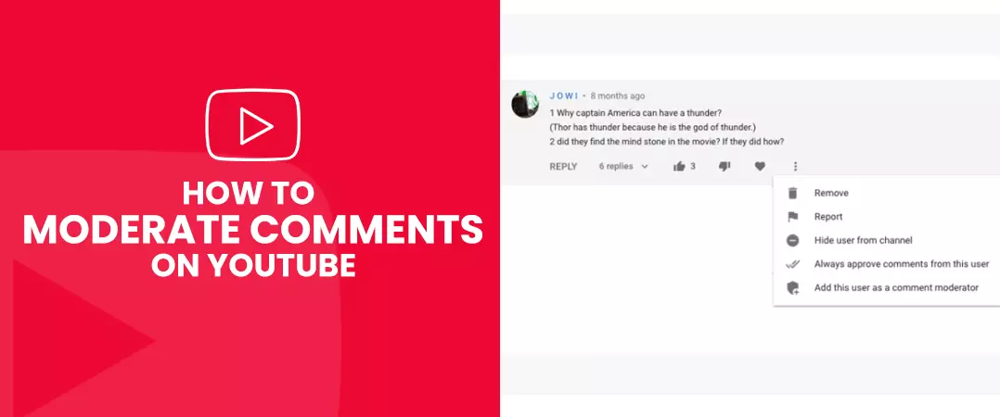
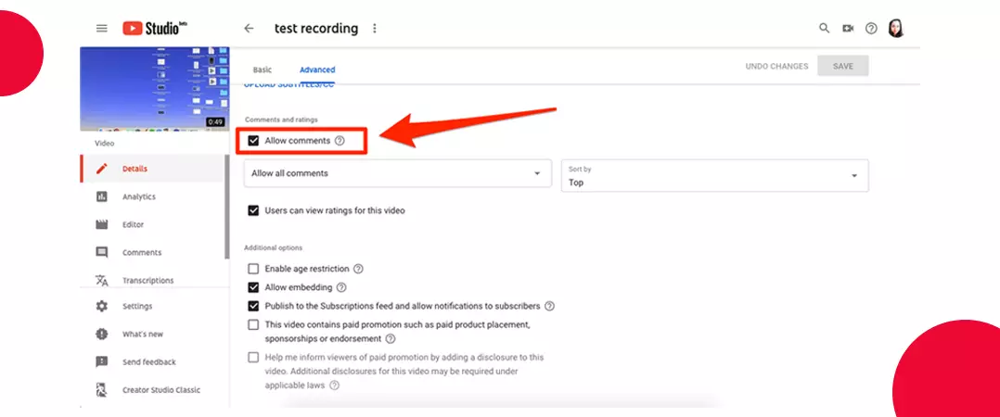
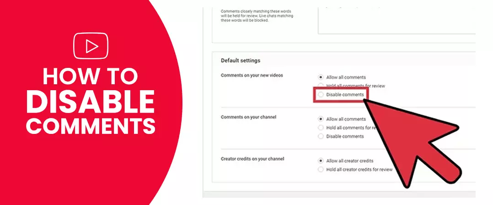
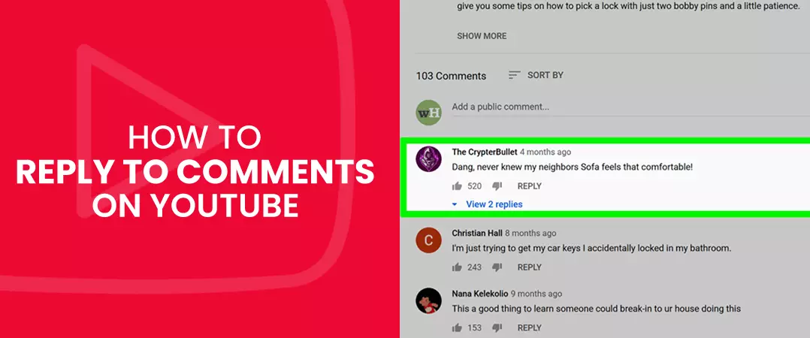
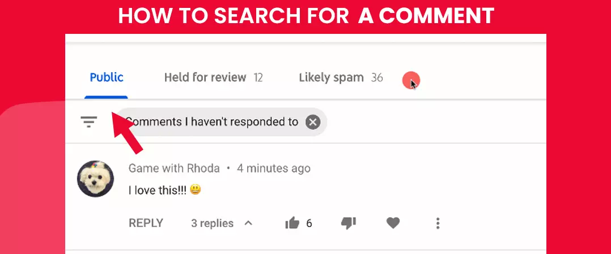
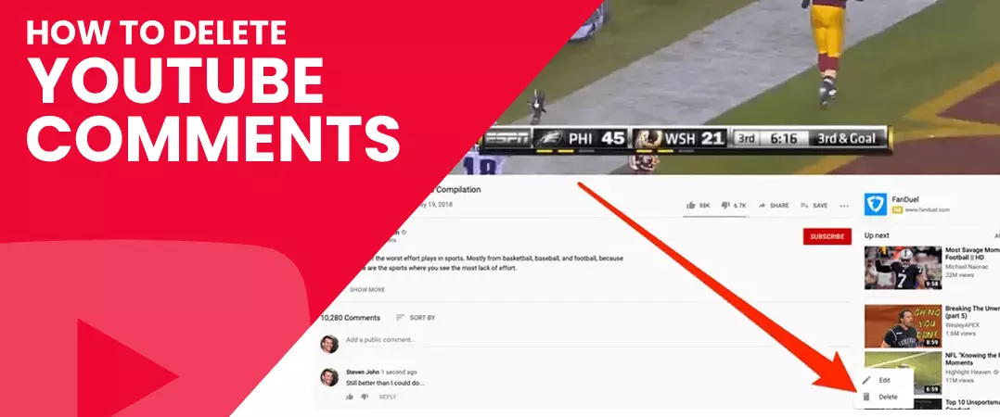

YouTube is quickly becoming one of the more popular platforms for marketers - who want to put their product or services in front of the right audience. The popular video streaming platform has a massive user base - 2 billion+
A strong community on YouTube is created when the creators and network users constantly engage in meaningful dialogue. To that end, we focus our attention on comments - one of the few means available to people to interact with your videos.
Engagement with network users brings in additional YT subscribers for the channel. The machine-learning algorithm of YT is known to promote content that receives quality engagement from comments. The algorithm recommends 70% of the total content watched by users on the video streaming platform.
In order to appear credible and authority within your niche, you also buy YouTube comments from legit vendors, as part of your YouTube video marketing strategy.
In this blog, we will cover all aspects of YouTube comment moderation. We will see how you can enable or disable comments, respond to users, add or delete comments, add moderators, and so much more. Please, stick with us till the end of this article.
Why is there a Need for YouTube Comment Moderation
Content moderation is a vital part of your YouTube marketing strategy.
Engagement is a critical factor that the algorithm considers when appraising your videos. Hence you have to constantly interact with your target audience by replying to genuine comments.
Like how good comments for YouTube videos can be social proof that attracts new audiences, responses made of inappropriate language can harm your channel. Hence it is essential to weed out comments flagged as spam or containing negative reviews.
Below are some of the benefits you receive when you moderate your comments:
- Furnish your audience with valuable information.
- Add credibility to your brand.
- Enhanced return for your YouTube ad campaigns
How to Moderate Comments on YouTube

Latest begin by asking ourselves a fundamental question. What gets passed as a good comment on YouTube videos?
A set of principles for posting on any social media platform must be followed - whether you are a brand , replying to a user comment or posting one on another creator's video.
The points below make for an optimum YT comment strategy:
- Posting a comment in the form of a question to initiate conversation.
- Commenting as a reply to a user's query.
- Interacting with your target viewers' content via comments.
You can also increase your brand's exposure by interacting with content on other channels within your niche.
1. Comment Moderation on YouTube
Add People as Moderators
Initially, in the earlier stages, you are capable of managing activities related to your YT channel. But as you start accumulating more videos and your channel starts to grow. You will require additional help.
You can hire people as comment moderators to take some burden off your shoulders. These individuals are given the right to browse user comments on your videos. Moderators have the authority to delete replies that they deem inappropriate or hold comments in the review tab for your approval.
To add moderators:
- Go to the platform’s community settings in the YouTube Studio dashboard.
- Select the 'Automatic Filters' tab.
- Add moderator
Define Rules for Moderation
From the same 'Automatic Filters' tab, you can set moderation rules for your YT videos:
- Approved user: the ones you add as approved users can post comments on your videos.
- Hidden user: users in this list will not be able to post replies on your videos
- Blocked words: comments that contain terms from your blocked words list will be automatically hidden.
- Block links: comments that have links to external sources are not allowed on your videos.
Also read: YouTube Analytics
How to Turn on Comments in YouTube

You can implement different YouTube comment settings for a single video and your entire channel - depending on your preferences.
To find comment setting for your YT videos, follow the below steps:
Step1: Go to Your YouTube Studio Page
Once you sign in to your account with the necessary credentials, click on your channel icon on the top right corner of the screen and select 'YouTube Studio' from the dropdown.
Step 2: Access the Settings Tab
Inside the YouTube Studio dashboard, scroll the column on the left-hand side of your screen and select the 'Settings' option.
Step 3: Navigate to the Community
When you click on 'Settings', a pop-up screen will open. Select 'Community from the options available in the left column.
Now you see two tabs - 'Automated Filters' and 'Default'.
By clicking on 'Default' for community settings, you can decide to:
Allow all comments:
Comments on your videos by network users are published immediately.Hold potentially inappropriate comments for review:
Comments that YT identifies as unsuitable will not be displayed under your videos.Hold all comments for review:
Every comment by users is held for moderation and will only get published once you or your moderators approve it.How to Disable Comments on YouTube

On the same 'Default Tab', you will find the fourth option called 'Disable Comments'.
When you select this option, no network user will be able to publish comments on your videos.
But if you do not want to disable comments for all your content and only want the option to be applicable for a solitary video.
Follow the below steps:
- Go to your 'YouTube Studio' dashboard.
- Select the 'Content' option from the left-hand column of your screen - now you can see all your uploaded videos.
- Select the video of your choice.
- Click on 'Edit' from the menu bar on top and choose 'Comments' from the dropdown menu.
- Now, select the 'Disable Comments' option for the chosen video.
That's it; now, users cannot post comments for the underlying video.
Also read: YouTube Captions & Subtitles
How to Reply to Comments

First, sign in to your account. Access YT Studio by clicking on a channel icon on the top right corner of your screen. Now select 'Comments' from the menu on the left.
Your initial configuration of comments for YouTube will determine how they appear on the screen. The ‘Published tab’ will contain the public statements visible on your video, whereas unpublished comments will be held for moderation in the ‘Review Tab’. Comments that YT flags will appear in the ‘Spam Tab’.
To respond to a comment:
- Go to a 'Published Tab' and find a statement you want to respond to
- Click on the 'REPLY' icon below to enter your reply.
- Approve comments in the unpublished tab before you respond to them.
- Besides replying, you can also like or dislike the comments to express your opinion.
How Can You Search For a YouTube Comment

Click on the 'Filter' below the published tab.
You can now segregate comments by:
- Search term
- Contains questions
- Public Subscribers
- Channel Members status
- Subscriber count
- Response status
How to Delete YouTube Comments

In your YT studio dashboard, you have two ways to remove comments on YouTube.
1. Comments You Hold for Moderation
If you prefer keeping all the comments for review, then delete a comment by pressing the 'Trash' icon beside the approval tick.
2. Comments Already Posted on Your Videos
To remove comments that are already published,
- Click comments on the left-hand side of the YT Studio dashboard.
- Navigate to 'Published Tab'. Look for the comment you want to delete.
- Click the three dots beside the heart option.
- Press 'Remove'.
How Can You Report Comments
On the YT Studio dashboard, navigate to the comment section. You can report a comment in the publish or held for review tabs by clicking the flag option for the statement of your choice.
How to Edit YouTube Comments
Users are not the only ones who comment on videos uploaded on your channel. An optimum video marketing strategy involves you posting replies on other creators' videos.
At times you may not be satisfied with your initial response. Hence, there is a need to edit or delete already published comments - follow the steps below to do just that.
• Go To Your YouTube Channel
From the YouTube Studio dashboard, click on the icon on the top right corner of your screen and press 'Your Channel' to go to your YT channel interface.
Find Your YouTube History Tab
From the left-hand column of your screen, select the 'History' option below the library.
Navigate To Comments
On the history window, select 'Comments' on the right-hand column of the screen, under 'MANAGE ALL HISTORY'. Now you will be redirected to a page that lists all your published comments.
Edit or Delete Comments for YouTube
When you select a comment, you will be redirected to the commented video.
Press three vertical dots at the far-right side of your comment and select one of the two options - Edit or Delete.
Save Your Changes
If you select the 'Delete' option, YT will permanently remove your comment. On the other hand, the 'Edit' option will enable you to make changes to your initial reply. Press 'SAVE' once you are satisfied with your new comment.
If you successfully stayed with us until this point, then you have all the information you will ever need for effective YouTube comment moderation.
We hope you gained valuable insights from the articles. Do check out more such content on a website. How is moderation working for your channel?
Feel free to share!